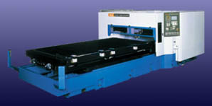
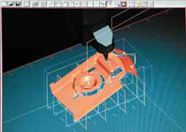

|
CNC
lazer kesme tezgahlarý:
Torna
ve iþleme mekezlerinden farklý olarak; Lazer iþleme makineleri,
iþlenecek malzemeyi 0.5 mm'den küçük çaplý bir lazer ýþýk
hüzmesi ile eritir ve buharlaþtýrýr. Sertliði veya yoðunluðu
ne olur ise olsun, tüm malzemeler çabuk ve pürüzsüz olarak
kesilmektedir. Kesilmesi zor malzemelerden olan inconel, titanyum
ve takým çeliði örnek olarak gösterilebilir. Dokunmasýz iþleme
gerçekleþtirildiðinden dolayý sabitleme - düzeltme gerektirmemektedir.
Maksimum iþlenebilecek malzeme kalýnlýðý lazer osilatör'ünün
çýkýþ gücü ile belirlenmektedir. Örneðin; 4kW'lýk bir lazer,
15mm lik paslanmaz çeliði, 20mm lik takým çeliðini, 25mm lik
yumuþak çeliði kesebilmektedir. Ek olarak; üç boyutlu lazer
iþleme makineleri yalnýz düz tabakalarý deðil, üç boyutlu
kompleks parçalarý da kesebilmektedir.
Lazer iþleme merkezi seçiminde aranmasý gereken temel kriterler:
1-) Lazer osilatör'ünün çýkýþ gücü, iþlenecek malzeme
kalýnlýðý için ana kýstas teþkil etmektedir. Bununla birlikte
aranmasý gerekli temel kriterler; kesimde kesintisiz sürekli
kalite, pürüzsüzlük ve hassasiyettir. Bunun için, tercih edilecek
lazer iþleme merkezinin gerçek ve görsel performansý bizzat
görülmelidir.
2-)
Vibrasyon, lazer gibi hassas bir konuda önemli belirleyici
bir kriterdir. Ýç vibrasyonlar ve özellikle dýþ çevresel vibrasyonlar,
toplam bileþke vibrasyonu teþkil etmektedir. Ýhmal edilebilir
görünen bir vibrasyon, lazer'in yuvarlak açmasý gerekli bir
deliðin oval açýlmasýna sebeb olabilmektedir. Ayrýca vibrasyon,
kesintisiz sürekli kesim kalitesi, pürüzsüzlük ve hassasiyet
konularýnda etkin bir belirleyici kriterdir.
3-)
Toplam kullanýlan ekipman sayýsý ve toplam maliyetler :
Lazer iþleme makinelerinde, kullanýlan ekipman sayýsýnýn (odaklayýcý
lensler, doðrultucu ve yönlendirici aynalar, kullanýlan lazer
gazý, tüp sayýsý v.s.) olabildiðince az tutulmasý seçimlerinizde
belirleyici unsurlardan olmalýdýr. Bu konu; ek maliyet, periyodik
bakým-deðiþim, daha çok ayar, ek fonksiyonel baðlantýlar,
servis maliyeti gibi ciddi düþünülmesi gerekli külfetler getirmektedir.
Temel
olarak; Madde-1'de belirtilen kesintisiz sürekli kalite, pürüzsüzlük
ve hassasiyetin olabildiðince az deðiþkene baðlanmasý gereklidir.
a-
Iþýðýnýn katedeceði yol uzadýkça ýþýk saçýlýmý artmaktadýr.
Bunu önlemek için ise, ek odaklayýcý ve doðrultucu elemanlar
kullanýlmaktadýr (NC ayarlý, eksen ortasýnda ek aynalý ýþýn
sabitleme ya da konkavlýðý NC ile ayarlanabilir özel aynalar
kullanýlmaktadýr). Bunlar da sonuç olarak; ek maliyet, periyodik
bakým-deðiþim ve servis maliyeti gerektirmektedir.
Bu hareketlerin, yüksek hýzlý kesimlerde sürekli olarak
gerçekleþtirileceði göz önünde bulundurulacak olur ise;
Lazer ýþýðýnýn katedeceði yolun mümkün olduðunca kýsa, lazer
kesim kafasýnýn da olabildiðince az hareketli olmasý önem
taþýmaktadýr.
b-
Lazer gazý ve kesim için gerekli yardýmcý gazlarýn oransal
kullaným performansý, ara ek ekipman kullanýlýp kullanýlmadýðý,
tüp ve tüketim maliyetleri de dikkate alýnmasý gerekli önemli
bir husustur..
c-
Toplam elektrik tüketimi, yine toplam maliyetler ile yakýndan
incelenmesi gerekli bir konudur..
4-)
Seri üretim yapýlan ve zamanýn çok deðerli olduðu sistemlerde
seçeceðiniz lazer iþleme merkezinin, farklý kalýnlýklardaki
farklý malzemeleri, kafa deðiþimine, ek ayarlara ve zaman
kayýplarýna gerek duyulmaksýsýn, kesintisiz ve sürekli gerçekleþtirebilme
özelliðine sahip olmasý gereklidir.
5-)
Servis aðý, kalitesi ve güvenilirliði tüm kriterlerden ayrý
tutulmasý ve çok ciddi deðerlendirilmesi gerekli temel bir
prensiptir.
6-)
Tüm bu belirleyici kriterler ile birebir örtüþen, lazer iþleme
merkezinin tamamlayýcýsý CAD/CAM çizim ve kod çevirici programlarýnýn
mevcut olmasý sizler için yine önem verilmesi gerekli bir
konudur. CAD (Computer Aided Design) Bilgisayar Destekli Çizim,
CAM (Computer Aided Manufacturing) Bigisayar Destekli Ýmalat
kýsaltmalarýndan oluþmaktadýr. CAM, CAD'de yapýlmýþ çizimleri
iþler ve makine kodlarýna dönüþtürür. (ISO / EIA)
Sonuç
olarak; rakamsal veriler, teknik karakteristikleri yansýtýr.
Bu da, temelde sizin teknik beklentilerinizi kaþýlayacak kriterlerdir.
Nihai karar, yukarýdaki temel kriterler ve maliyet hesaplarý
ile birleþtirildiðinde sizleri gerçek sonuca ulaþtýrmalýdýr...
|